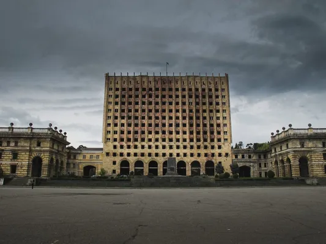
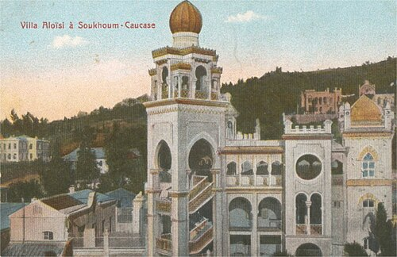
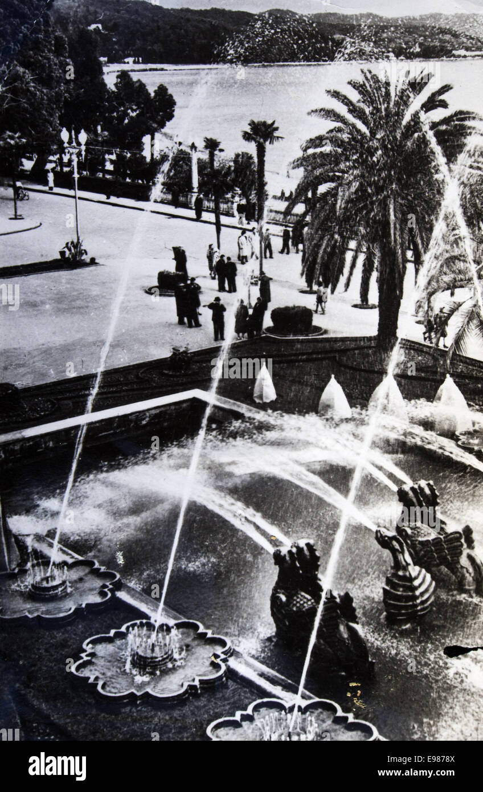
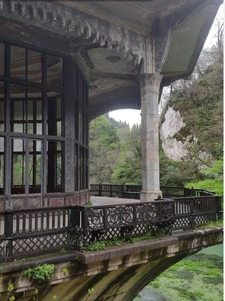

აფხაზეთი და, კონკრეტულად, სოხუმი, ყოველთვის იყო ადგილი, სადაც სხვადასხვა კულტურა, ეპოქა და არქიტექტურული სტილი იდეალურად ერწყმოდა ერთმანეთს. ევროპული მოდერნი, ნეოგოთიკა და ადგილობრივი რიტმი ქმნიდა უნიკალურ ურბანულ ქსოვილს. თუმცა, 1990-იანი წლების ომისა და შემდგომი ოკუპაციის შემდეგ, სოხუმის ბევრი ისტორიული ნაგებობა დროში გაიყინა და ერთგვარ მოჩვენებად იქცა. .
მთავრობის სახლი — ტკივილის მონუმენტი

თავისუფლების მოედანზე მდებარე მინისტრთა საბჭოს შენობა დღეს სოხუმის ყველაზე ცნობილი და ტრაგიკული სიმბოლოა. საბჭოთა ეპოქის ეს მონუმენტური ნაგებობა 1993 წლის სექტემბერში, ქალაქის დაცემისას გადაიწვა. დღეს მისი გაშავებული, დაცარიელებული კარკასი დგას როგორც ცოცხალი ძეგლი იმ ტკივილისა, რამაც ქალაქის ისტორია ორად გაყო. ის არ აღუდგენიათ — თითქოს დრო გაჩერდა იმ წამს, როცა კედლებიდან ბოლო კვამლი ამოვიდა.

ვილა ალოიზი — არისტოკრატიული სილუეტი
მე-19 და მე-20 საუკუნეების მიჯნაზე აშენებული „ვილა ალოიზი“ (Villa Aloisi) სოხუმის არქიტექტურული ეკლექტიკის გვირგვინია. შენობაში ერთმანეთს ერწყმის მოდერნი, ნეოგოთიკა და მავრიტანული (აღმოსავლური) მოტივები. მიუხედავად იმისა, რომ დროთა განმავლობაში ის არაერთხელ დაზიანდა და მისი თავდაპირველი ბრწყინვალება მკრთალია, მისი სილუეტი დღემდე ინახავს ძველი სოხუმის არისტოკრატიულ სულს.

სოხუმის დრამატული თეატრი და გრიფონები
ქალაქის კულტურული ცხოვრების გული — სოხუმის დრამატული თეატრი გამორჩეული იყო თავისი ულამაზესი ფასადითა და შადრევნით, რომელსაც მითიური ოქროსფერი გრიფონები ამშვენებდა. თეატრი ყოველთვის იყო სიმბოლო იმისა, თუ როგორ აერთიანებდა ქალაქი ქართულ და აფხაზურ შემოქმედებით ძალებს. დღეს შენობა ფიზიკურად არსებობს, თუმცა მისი კედლებიდან ის უხილავი, ცოცხალი სული აკლია, რომელსაც იქ მცხოვრები საზოგადოება ქმნიდა.

ფსირცხას და გაგრის სადგურები — ბუნების მიერ შთანთქმული ისტორია
მართალია სოხუმს გარეთაა, მაგრამ აფხაზეთის ხსენებისას შეუძლებელია გვერდი ავუაროთ ისტორიულ რკინიგზის სადგურებს. ახალი ათონის (ფსირცხას) სადგური-პავილიონი, რომელიც პირდაპირ ტბის თავზეა დაკიდებული, დღეს ბუნებამ ჩაყლაპა. ხავსითა და ლიანებით დაფარული თაღოვანი ფანჯრები და დახვეწილი ორნამენტები აპოკალიფსურ, მაგრამ საოცრად პოეტურ სანახაობას ქმნის.
ნაგებობები ოკუპირებულ აფხაზეთში მხოლოდ ქვების, ბეტონისა და ლითონის გროვა არ არის. თითოეული ჩამოშლილი აივანი თუ გადამწვარი ფასადი მეხსიერების მატერიაა. სანამ ეს შენობები დგას, თუნდაც დანგრეული და მიტოვებული, ისინი ინახავენ ისტორიას, რომელიც ელოდება დროს, როცა კედლებს შორის ისევ სიცოცხლე დაბრუნდება.